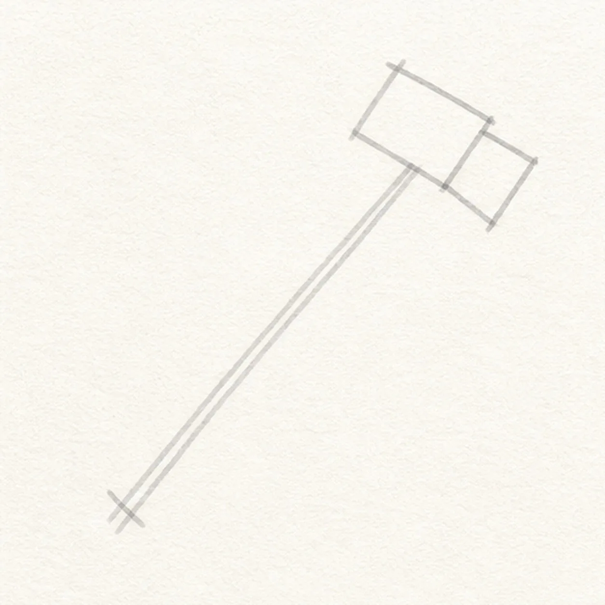
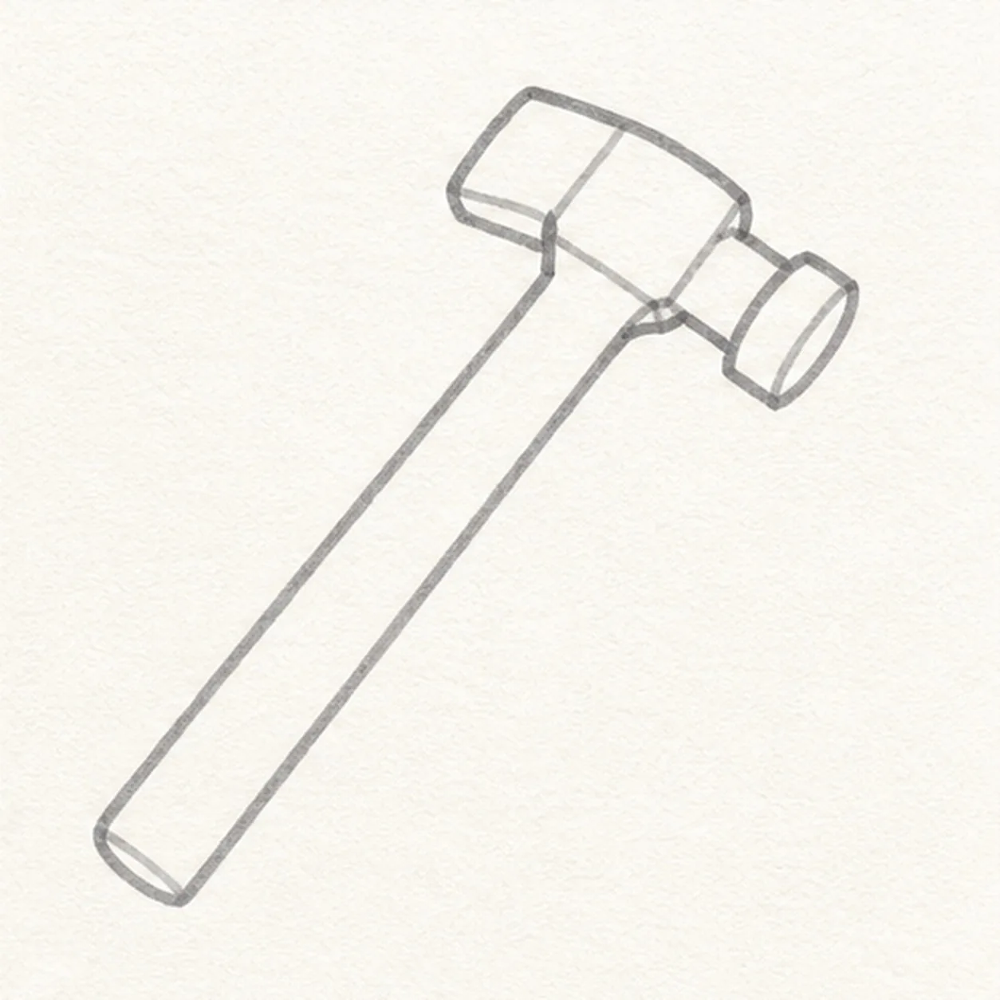
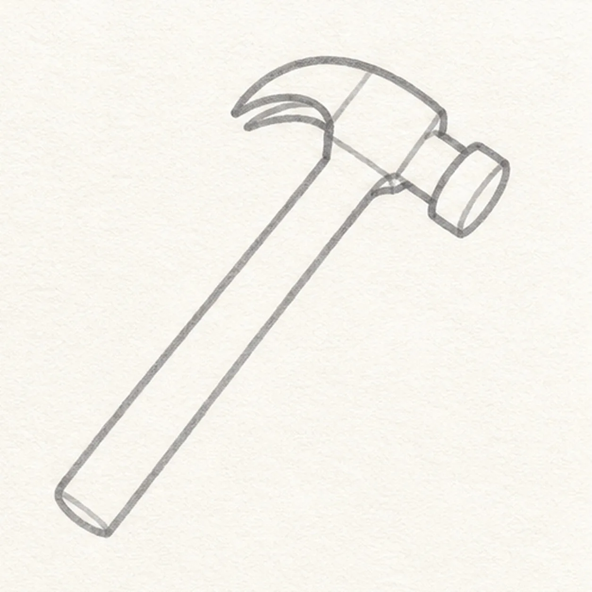
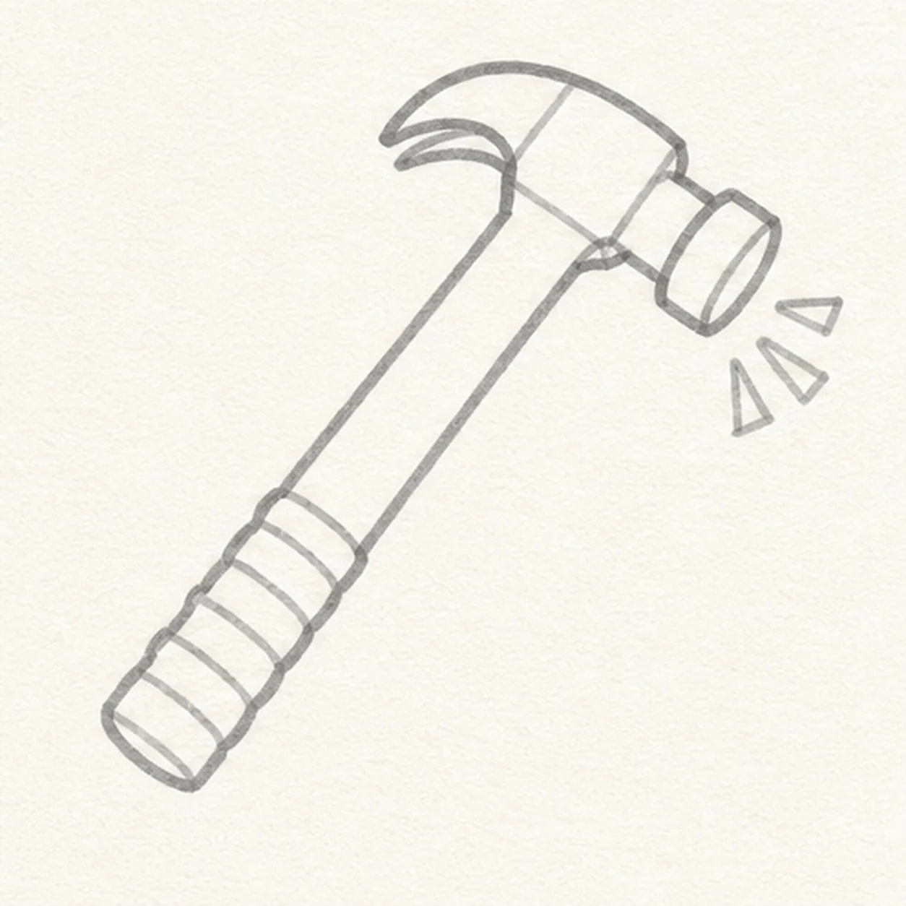
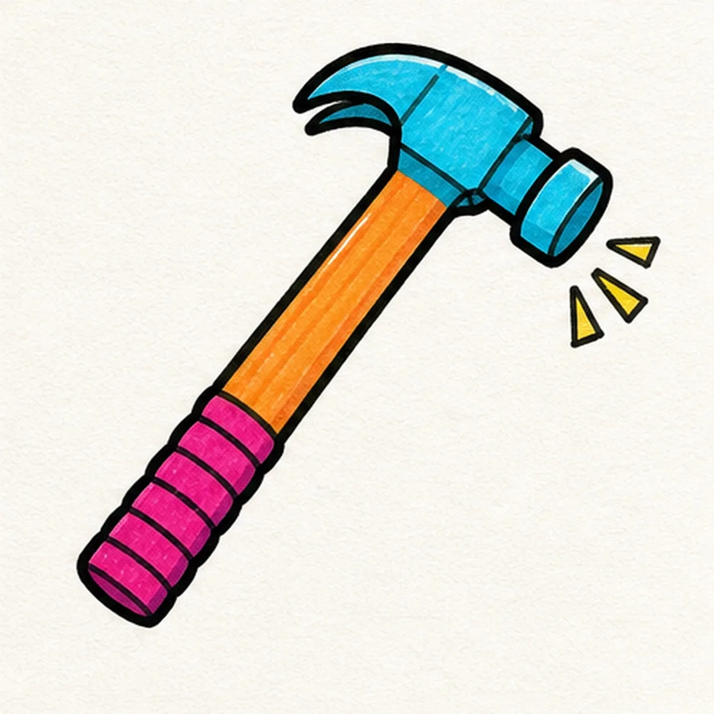

Felt-tip marker mode
Let's draw a cartoon claw hammer
Treat this as one playful practice round: sketch the idea loosely, simplify the shapes, then commit with confident marker outlines and bright fills.
-
01

Set the hammer angle
Draw a light diagonal axis for the handle and place a simple block guide across its upper end for the head.
Doodle tip: Ghost the long diagonal twice before touching down. One clear direction gives the whole hammer more energy than a nearly vertical handle.
-
02

Build head and handle
Shape the striking face, neck, chunky head, and long handle around the established guide, leaving the back of the head blunt for now.
Doodle tip: Draw the handle as two long parallel edges, then compare the gap between them from top to bottom. A slight taper is fine, but avoid pinching the middle.
-
03

Cut in the claw
Extend the back of the existing head into a curved two-prong claw with one clear center notch.
Doodle tip: Pull the outer claw curve first, then echo it inside and open the notch at the tip. The empty notch shape is what makes the tool read as a claw hammer.
-
04

Wrap the grip
Add several grip bands near the handle base and three small comic impact marks beside the striking face.
Doodle tip: Rotate the page so the grip bands cross the handle cleanly. Keep the impact marks small and point them away from the hammer face like a tiny burst.
-
05

Ink and color the hammer
Trace the established hammer in black, then fill the head cyan, handle orange, grip magenta, and impact marks yellow.
Doodle tip: Fill the long handle from edge to edge in parallel strokes. Let a little marker streak texture show instead of layering until the orange looks digitally flat.
-
06
Nail the finish
Strengthen the existing contours, clarify the claw notch and grip bands, and tidy the cyan, orange, magenta, and yellow fills.
Doodle tip: Stop before adding a nail, board, hand, face, words, or border. The claw, striking face, wrapped grip, and impact marks already make the tool pop.